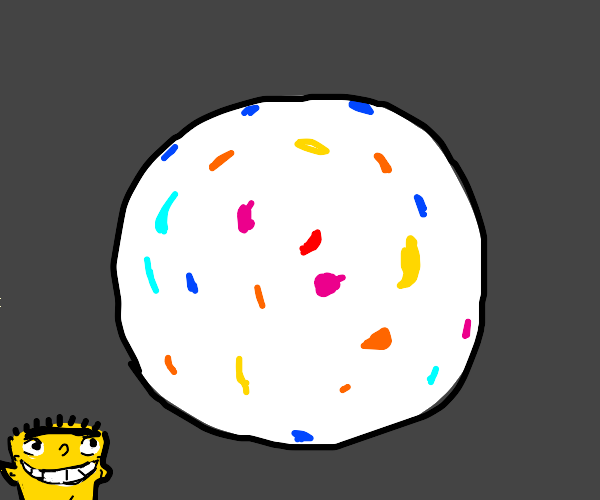

Jawbreaker

Description
Ed's go-to jaw breaking jawbreakers.
Ingredients
- Sugar
- Water
- Coloring
- Giant candy molds
Steps
- Add an exorbitant amount of water and sugar to a pot and stir until the sugar is uniformly moist
- Heat the pot on high heat and stir frequently. Monitor until almost all the water is gone.
- Take off the heat, add coloring and pour the syrup like solution into the candy molds.
- Put the molds into a fridge big enough to fit them and allow to cool for 1 to 2 hours.